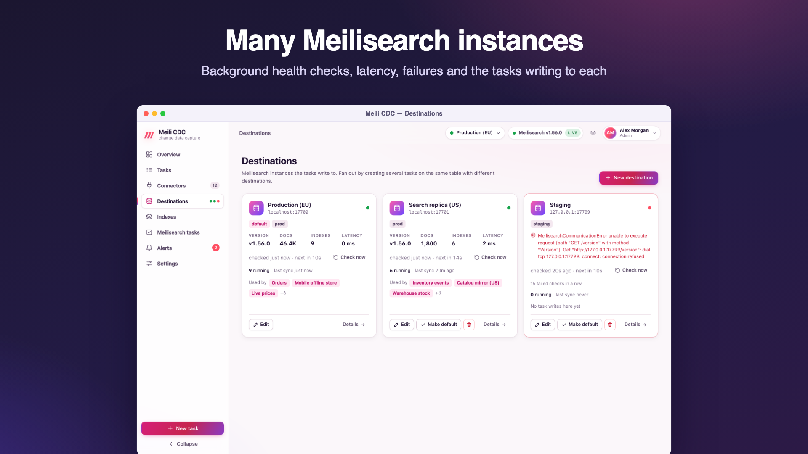
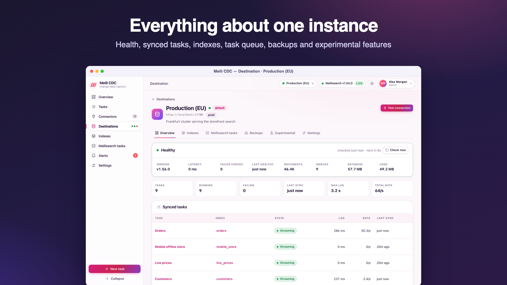

Meilisearch destinations
A destination is a named Meilisearch instance that tasks write to. Add as many as you need (regions, staging, a search replica) and fan one table out to several of them with several tasks.

Add a destination
Go to Destinations → Add destination (admin role). Test checks the URL and key before saving and reports the version, latency and number of indexes.
| Field | Default | Meaning |
|---|---|---|
| Name | required | A label shown everywhere, for example Production (EU). |
| URL | required | Absolute http or https URL of the instance, for example https://ms-1234.meilisearch.io. A trailing slash is removed. |
| API key | empty | The key sent as a bearer token. Stored encrypted, shown as ••••••; keep the mask to keep the stored key. |
| Gzip requests | on in the dashboard | Compress request bodies. Saves bandwidth to remote instances; turn it off on loopback or a LAN to save CPU. In the API the JSON field gzip is false when omitted. |
| Timeout | 30s | Per-request timeout. |
| Health check every | 30s | Background check interval, between 5s and 1h. The dashboard offers 5 s to 10 minutes; the API accepts any value in range. |
| Tags, description | empty | For your own organisation. |
The first destination becomes the default: tasks that do not name a destination write there, and index pages open on it. Make default moves the flag. A task's empty index.destinationId is resolved to the default when the task is saved, so later changing the default does not move existing tasks.
API key permissions
The simplest choice is the instance's master key or its Default Admin API Key. If you create a dedicated key, include the actions the features you use need. These follow from the Meilisearch API calls the service makes:
| Feature | Meilisearch actions |
|---|---|
| Syncing (snapshot and stream) | documents.add, documents.delete, indexes.create, indexes.get, indexes.update (primary key of an empty index), stats.get, tasks.get |
| Managed index settings | settings.get, settings.update |
| Zero-downtime resync | indexes.create, indexes.swap, indexes.delete, settings.get, settings.update, tasks.get; plus dumps.create with dump before resync |
| Health checks | version, stats.get (the /health route needs no key) |
| Dashboard: search, documents, diff | search, documents.get |
| Dashboard: task queue, backups | tasks.get, tasks.cancel, dumps.create, snapshots.create |
| Dashboard: index admin | indexes.delete, indexes.swap, settings.update, and the compaction action of your Meilisearch version |
Scope the key's indexes to the index uids your tasks use, plus *__cdc_shadow_* if you enable zero-downtime resync (shadow indexes are named <uid>__cdc_shadow_<unix time>). Experimental features use Meilisearch's /experimental-features route, which may need the master key. A rejected key stops tasks with a configuration error (invalid_api_key), rather than retrying.
Health
Every destination is checked in the background at its interval. A check reads the version, the number of indexes and documents and the database size, and records the latency. The destination page and list show:
- healthy or unreachable, with the last error and the number of consecutive failures;
- version, indexes, documents, database size, latency, the last time it was healthy and the next check;
- the tasks writing to it with their state, index, lag, rate and last sync, and an aggregate (tasks, running, failing, last sync, maximum lag, rate).
Each completed check is pushed live to dashboards (destination.health events). Check now runs one immediately (moderator). Testing a destination's connection needs admin. An alert rule of type meili_down notifies you when an instance stays unreachable; see Alerts.
Edit and delete
- Changing the URL or the API key restarts the running tasks that write to the destination. A new interval takes effect at once.
- A destination used by tasks cannot be deleted (
409with the tasks), and the default destination cannot be deleted; make another one the default first.
Per-instance pages
Each destination has its own page with tabs:

| Tab | What it shows |
|---|---|
| Overview | Health, statistics and the tasks writing here. |
| Indexes | The instance's indexes with document counts and the tasks that manage them. See Index management. |
| Meilisearch tasks | The instance's task queue, filterable by index, status and type; enqueued tasks can be cancelled (moderator). Writes made by meilisearch-cdc carry the custom metadata cdc:<task id>. |
| Backups | Request a dump or a snapshot of the instance (admin). Meilisearch writes them to its own dump and snapshot directories. |
| Experimental | Meilisearch's experimental features as toggles (admin; read only for others). |
| Settings | The destination's own fields (name, URL, key, gzip, timeout, interval). |
The top-level Indexes and Meilisearch tasks pages show the same information for every instance at once, grouped per instance.
Single-instance mode
When MEILI_URL is set, the service writes only to that instance. It appears as destination default, marked managed by env, with its URL and key read only, and adding, deleting or switching destinations is refused with 409. See Configuration.